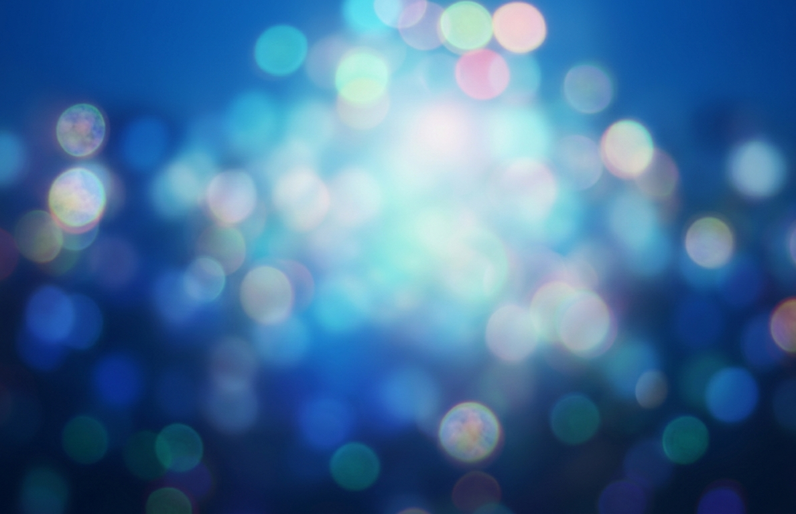

MEA
Personal Portfolio
copyright2026. in9
icsin9@gmail.com
icsin9@gmail.com
Multi
Environmental
Architecture
Environmental
Architecture
MEA는 '메아리치다'에서 이름을 따 온, 근미래의 일상 보조 및 커뮤니티 제작을 위한 장기 프로젝트입니다.
계속해서 변화하는 미래환경 속에서, 사용자 경험을 향상시키고, 최근 발전하는 AI의 기술도 적극적으로 활용할 수 있는 다기능 플랫폼을 만드는 것이 목표입니다. MEA는 근미래의 일상 보조 및 커뮤니티 제작을 위한 장기 프로젝트입니다. 계속해서 변화하는 미래환경 속에서, 사용자 경험을 향상시키고, 최근 발전하는 AI의 기술도 적극적으로 활용할 수 있는 다기능 플랫폼을 만드는 것이 목표입니다.
MEA의 '메아리치다'에서 따온 이름으로, 사용자의 목소리가 기술이라는 벽에 부딪혀 사라지는 것이 아니라, 더 큰 가치와 울림으로 돌아오는 '메아리(Echo)'의 원리를 지향합니다. 우리는 기술이 인간의 일상을 소외시키는 것이 아니라, 개인의 요구에 반응하고 공동체로 확산되는 유기적인 연결망을 구축하고자 합니다. 이 프로젝트는 고도화된 AI 에이전트와 사용자 간의 상호작용을 최적화하는 데 집중합니다. 고정된 플랫폼에 사용자가 적응하는 방식에서 벗어나, AI가 사용자의 환경 변화를 실시간으로 학습하고 보조하는 적응형 다기능 인터페이스를 통해 미래 지향적인 UX(사용자 경험)를 선사합니다.
계속해서 변화하는 미래환경 속에서, 사용자 경험을 향상시키고, 최근 발전하는 AI의 기술도 적극적으로 활용할 수 있는 다기능 플랫폼을 만드는 것이 목표입니다. MEA는 근미래의 일상 보조 및 커뮤니티 제작을 위한 장기 프로젝트입니다. 계속해서 변화하는 미래환경 속에서, 사용자 경험을 향상시키고, 최근 발전하는 AI의 기술도 적극적으로 활용할 수 있는 다기능 플랫폼을 만드는 것이 목표입니다.
MEA의 '메아리치다'에서 따온 이름으로, 사용자의 목소리가 기술이라는 벽에 부딪혀 사라지는 것이 아니라, 더 큰 가치와 울림으로 돌아오는 '메아리(Echo)'의 원리를 지향합니다. 우리는 기술이 인간의 일상을 소외시키는 것이 아니라, 개인의 요구에 반응하고 공동체로 확산되는 유기적인 연결망을 구축하고자 합니다. 이 프로젝트는 고도화된 AI 에이전트와 사용자 간의 상호작용을 최적화하는 데 집중합니다. 고정된 플랫폼에 사용자가 적응하는 방식에서 벗어나, AI가 사용자의 환경 변화를 실시간으로 학습하고 보조하는 적응형 다기능 인터페이스를 통해 미래 지향적인 UX(사용자 경험)를 선사합니다.
VISION
Introduction
본 홈페이지는 저의 공부 결과물들을 저장하고 돌이켜 보는 아카이브로써 제작했습니다. 학교에서 배우는 여러 과목들과 실무 작업, 프로젝트 등이 게시됩니다. 또한 개인적인 작품이나 기획도 틈틈히 게시할 생각입니다. 홈페이지는 항목을 추가하면서 업데이트를 통해 꾸준히 기능이 더 추가됩니다.